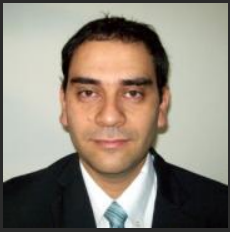

Formulación, evaluación financiera y gestión de proyectos para microempresas y PyMEs, a cargo de un Contador Público con formación de posgrado en administración financiera del sector público. Atención presencial en Jujuy y consultoría remota para clientes de todo el país.
Comercios, talleres y pequeños productores que necesitan presentar un proyecto sólido ante el Consejo de la Microempresa u otro organismo público de crédito, y no saben por dónde empezar con la documentación técnica y financiera que se exige.
Empresas ya en marcha que buscan financiamiento para inversión o capital de trabajo, y necesitan un plan de negocio con evaluación económico-financiera rigurosa: flujo de fondos, VAN, TIR y punto de equilibrio.
Feriantes, almacenes y prestadores de pequeños servicios que quieren tener sus números en orden: registros, estados contables y la carpeta que pide el Consejo de la Microempresa u otro organismo cuando llega el momento de pedir un crédito.
| Instrumento | Quién lo otorga | Para qué sirve | Condiciones |
|---|---|---|---|
| Microcréditos y préstamos promocionales | Consejo de la Microempresa (Ministerio de Desarrollo Económico y Producción) | Inversión y capital de trabajo de microemprendimientos | Tasas subsidiadas y plazos promocionales, según la operatoria abierta |
| Créditos CFI: Competitividad PyME, Financiamiento Verde, línea para mujeres y líneas de exportación | Consejo Federal de Inversiones, por medio de su Unidad de Enlace en Jujuy | Inversión productiva de MiPyMEs y emprendedores, con capital de trabajo asociado a la inversión | Tasa fija los primeros años y después variable. El monto depende de la línea y de la garantía |
Montos, tasas y plazos cambian seguido, por eso no los publico acá. Los confirmo con el organismo al empezar cada proyecto. Relevamiento: noviembre de 2026.
Diagnóstico, memoria descriptiva, análisis de mercado y proyección financiera para presentar ante el Consejo de la Microempresa, el Consejo Federal de Inversiones (CFI) u otros organismos públicos de crédito.
Evaluación económico-financiera completa: flujo de fondos, VAN, TIR, período de repago y punto de equilibrio, para emprendimientos nuevos o en expansión.
Acompañamiento en la rendición de créditos y ANR, y en el armado de la documentación contable exigida por el organismo otorgante.
Talleres grupales, presenciales o virtuales, sobre formulación de proyectos, acceso al crédito y gestión financiera básica.
Registraciones, libros y estados contables bajo la Resolución Técnica 54 de la FACPCE (Norma Unificada Argentina de Contabilidad), para feriantes, almacenes y pequeños servicios. Con los libros al día, armar la carpeta para un crédito lleva mucho menos tiempo.
Los servicios anteriores, disponibles de forma 100% remota para clientes de cualquier provincia: reuniones por videollamada, documentación digital y seguimiento a distancia. El trabajo técnico es el mismo que en la modalidad presencial.
Relevamiento del emprendimiento y del objetivo de financiamiento.
Armado del proyecto y la proyección financiera.
Entrega de la documentación lista para el organismo elegido.
Acompañamiento durante la evaluación y, si corresponde, en la rendición.

Contador Público (Matrícula CPCE N° 2262), Magíster en Administración Financiera y Control del Sector Público, Especialista en Dirección de Proyectos Predictivos y Adaptativos (UBA, 2026), docente adjunto de la Facultad de Ciencias Económicas (UNJu) e investigador con categorización en curso. Doctorando en Políticas Públicas y Desarrollo (UNJu) y maestrando en Dirección de Proyectos Estratégicos e Innovadores (UBA), con investigación aplicada en fondos fiduciarios públicos y modelos de gestión para microempresas y PyMEs.